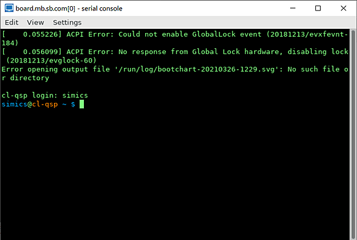
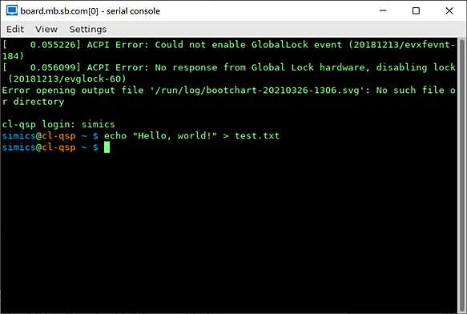
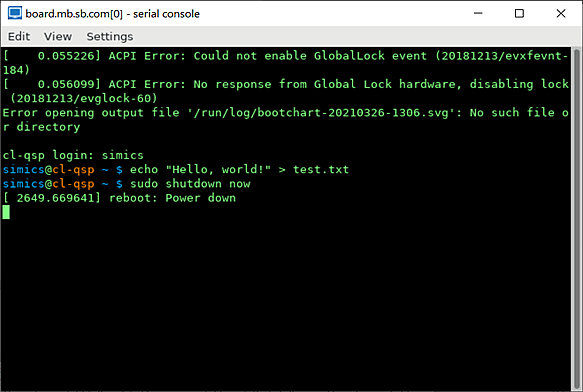
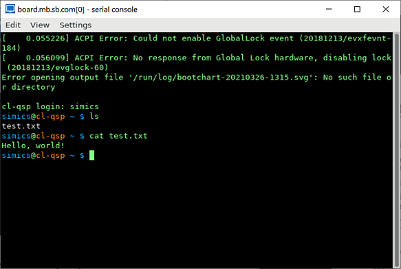
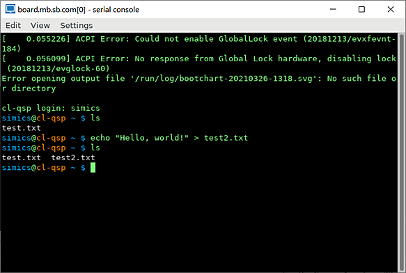
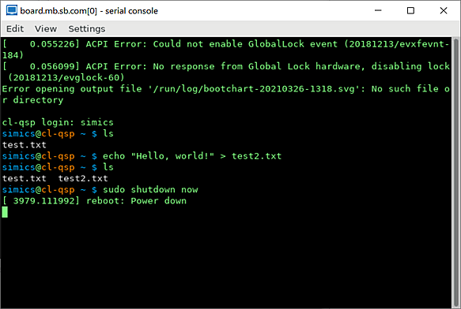
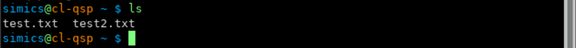

This section gives some information about virtual storage devices in Simics. Particularly, a few strategies are described for preserving changes done during a simulation session to virtual hard disks and using these changes in other simulation sessions.
Target machines created in Simics usually have emulated storage devices attached. A typical example of such storage device is a virtual hard disk.
The software running on the target machines reads data from and writes data to virtual hard disks. The actual data is stored in dedicated files on the host system. Such files are usually called image files, disk image files, or, simply, images.
Simics supports a few image files formats:
Normally, Simics opens disk image files in a read-only mode. All changes the guest software does to virtual disk's contents are accumulated in memory or in temporary files and are not written directly to disk image files. This means that any changes written to virtual hard disks during a simulation session are lost once a user quits Simics. There are a few benefits in using disk image files in a read-only mode:
The main drawback, though, is that one needs to take additional steps to preserve changes done to virtual hard disks during a simulation session. Below we describe a few strategies how to preserve changes done to virtual hard disks during a simulation session and use them in other simulation sessions.
The changes done by target software to the contents of virtual hard disks can be saved for later use with the save-persistent-state command. Here is a sample session demonstrating the usage of the command:
start simulator and create a target machine from Simics CLI by executing the targets/qsp-x86/firststeps.simics script with Simics run-command-file command:
simics> run-command-file targets/qsp-x86/firststeps.simics
run the machine until Linux is booted:
simics> run

create a file on the target system or do some other modification to the file system. As an example, the screenshot below shows how to create the test.txt file on the target system by running the echo "Hello, world!" > test.txt command: 
now, when a file was created, shutdown a target machine by running the sudo shutdown now command on the target machine. This is needed to ensure that a target operating system writes the file on the disk instead of, e.g., caching it in RAM of the simulated machine: 
stop simulation by executing the stop command via Simics command-line interface. This step is needed because even though the target machine entered shutdown state, Simics still continues to advance virtual time:
running> stop
simics>
save changes done to all virtual disks found in the target machine by running the save-persistent-state Simics command and specifying a destination where on the host system to keep the changes:
simics> save-persistent-state test_file_created.ckpt
quit Simics:
simics> quit
The test_file_created.ckpt directory created on step 6 above contains all modifications done to all virtual hard disks of the target machine. The modifications are stored in so-called differencing images which are often referred to as diff files in Simics documentation. These images only hold the differences to another images. A differencing image is useless by itself; it must always be used together with another image.
Let’s run a simulation now to see how the state saved previously can be used. Here is a sample simulation session:
start simulator and create a target machine from Simics CLI by executing the targets/qsp-x86/firststeps.simics script with Simics run-command-file command:
simics> run-command-file targets/qsp-x86/firststeps.simics
use the load-persistent-state command to load any state saved previously. We need to do this step at the very beginning, before the simulation was started, since otherwise the software running on the target will be presented with original state, not the updated one:
simics> load-persistent-state test_file_created.ckpt
run the machine until Linux is booted:
simics> run
check that the test.txt file created during the previous session is present:

Since the contents of Simics disk images is saved incrementally by default, care should be taken when deleting the state saved previously with the save-persistent-state command: such saved state may be referred to by the state saved later.
To sum up, the typical usage scenario for the save-persistent-state and load-persistent-state commands is:
load-persistent-state command to load, if you already have it, the state saved previously with the save-persistent-state command save-persistent-state command Please note that even though the saved states are saved incrementally and thus depend on each other one needs to run the load-persistent-state command only once with the state one wants to load.
Useful information about the save-persistent-state and load-persistent-state commands can be found in their documentation. The documentation can be obtained from Simics command-line interface by running the help command like this: help save-persistent-state.
The approach described above may result in multiple saved incremental states which are hard to manage. Simics allows to dump the contents of a whole virtual disk to a new disk image file. This file can be later used as a new disk image for the target machine.
There are several ways to dump a new disk image from a virtual disk in Simics. We will use the save-persistent-state command and its -independent-state flag.
Sample session:
start simulator and create a target machine from Simics CLI by executing the targets/qsp-x86/firststeps.simics script with Simics run-command-file command:
simics> run-command-file targets/qsp-x86/firststeps.simics
(optional) if there is any state saved previously with the save-persistent-state command you want to load, load it with the load-persistent-state command. In this session we load the test_file_created.ckpt state saved in the previous section:
simics> load-persistent-state test_file_created.ckpt
run the machine until Linux is booted:
simics> run
create a file on the target system or do some other modification to the file system. Since we loaded the test_file_created.ckpt state at step 2 above there is already a test.txt on the target machine. As an example, let’s create one more file (test2.txt): 
now, when we are done with all changes we wanted to do, shutdown a target machine by running the sudo shutdown now command on the target machine. This is needed to ensure that target operating system writes the file on the disk instead of, e.g., caching it in RAM of the simulated machine: 
stop simulation by executing the stop command via Simics command-line interface. This step is needed because even though the target machine entered shutdown state, Simics still continues to advance virtual time:
running> stop
simics>
save disks by running the save-persistent-state Simics command with the -independent-state flag and specifying a destination where on the host system to keep the files. This operation may take some time as disk images are quite large:
simics> save-persistent-state -independent-state my_independent_state.ickpt
quit Simics:
simics> quit
The my_independent_state.ickpt directory created on step 7 above contains, among other things, disk images of all hard disks of the target machine. The -independent-state flag used with the command ensures that the disk image are not differencing images (or, in other words, diff files) but the complete images which contain the contents of the whole disk.
By inspecting the contents of the my_independent_state.ickpt directory we can find there the board.disk0.hd_image.craff file. This file is the disk image containing the data from the board.disk0 virtual disk object. The next section shows how one can start a target machine with this disk image.
Simics scripts creating target machines often accept parameters which can be used to specify a disk image for the target machine to use. The targets/qsp-x86/firststeps.simics script accepts the disk0_image and disk1_image parameters which can be used to specify disk images to use for the both disks created in the target machine. The description of the parameters can be obtained with the help Simics command: help targets/qsp-x86/firststeps.simics. Here is an extract from the command output:
simics> help targets/qsp-x86/firststeps.simics
…
Disks:
disk0_image - existing file or NIL
Disk image file for the machine_name.disk0 virtual disk. Files
in craff (Simics own file format), VHDX, and raw formats are supported.
default value: NIL
…
disk1_image - existing file or NIL
Disk image file for the machine_name.disk1 virtual disk. Files
in craff (Simics own file format), VHDX, and raw formats are supported.
default value: NIL
Let’s run the targets/qsp-x86/firststeps.simics script using the my_independent_state.ickpt/board.disk0.hd_image.craff image created in the previous section:
start simulator and create a target machine from Simics CLI:
simics> run-command-file targets/qsp-x86/firststeps.simics disk0_image =my_independent_state.ickpt/board.disk0.hd_image.craff
run the machine until Linux is booted:
simics> run
check that both files are present: 